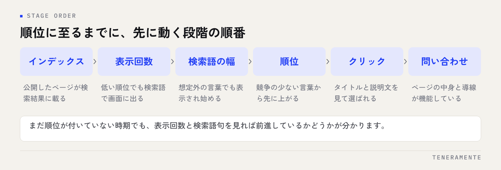

記事を出し続けているのに順位が動かない。あと何か月待てばよいのか、それとも方針が間違っているのか。SEOの効果が出るまでの期間は一律には決まりませんが、何がどの順番で動くかは決まっています。この順番を知らないまま日数だけを数えると、効き始めているサイトを途中でやめてしまいます。
📌 この記事の結論
SEOの成否は経過日数では判断できません。見るのは順位より手前の段階が前に進んでいるかどうかです。インデックス、表示回数、拾われる検索語の幅。この3つが動いていれば期間の問題で、止まっていれば中身の問題です。
01SEOの効果が出るまでの期間を、一律に言えない理由
「SEOはいつから効果が出ますか」という質問に正直に答えるなら、「サイトと狙う言葉によって違います」になります。これは答えを避けているのではなく、検索結果の並び方が相対的に決まるためです。
同じ内容の記事でも、すでに詳しい解説が並んでいる言葉と、誰も書いていない言葉では、評価されるまでの道のりが変わります。さらに、公開から日が浅いサイトと、何年も運用してきたサイトでは、同じ1本の記事の立ち上がり方が違います。
つまり期間は作業量ではなく、スタート地点と競争相手で決まるということです。ここを押さえずに「3か月やってだめだった」と判断すると、何がだめだったのかが分からないまま次の施策に移ることになります。
02効果は順位より手前の段階から順に現れる
順位だけを見ていると、何も起きていないように見える時期があります。実際には、順位に至る前の段階が順番に進んでいます。

この順番で進むため、まだ順位が付いていない時期でも、表示回数と検索語句を見れば前進しているかどうかが分かります。順位は途中の指標であって、最初に動く指標ではありません。
逆に、いちばん上の段階で止まっている場合、待っても何も起きません。公開したページが検索結果に載る状態になっているか、ここだけは最初に確認してください。確認の手順はSearch Consoleの使い方にまとめています。
03期間を左右する4つの条件
自社がどのくらいの時間軸で考えるべきかは、次の4つで見当がつきます。
- サイトの運用歴：公開したばかりのサイトは、記事が評価されるまでに時間がかかります
- 狙う検索語の競争：検索したときに大手や専門メディアが並ぶ言葉ほど、時間も本数も必要になります
- 検索される回数の多さ：月に何件も検索されない言葉は、順位が上がっても数字の変化が小さく、判断材料になりにくい
- 公開できる本数と頻度：関連する記事が増えるほど、サイト全体として扱われる話題が明確になります
このうち自分で選べるのは、後ろの2つです。最初から競争の激しい言葉だけを狙うと、判断できる材料が出るまでに時間がかかります。先に検索回数の少ない具体的な言葉で結果を出し、判断の材料を早く手に入れるほうが、運用としては続きます。
地図検索とは時間軸が違う
同じ「検索対策」でも、Googleマップ側の施策はプロフィールの情報を直せばその日に変わる部分があり、サイト側のSEOとは動き方が違います。両方を並行して行う場合、見る数字も判断の周期も分けてください。地図側の見方は[MEO対策の効果が出るまでの期間](2026-09-22-meo-kouka-kikan.html)に分けて整理しています。
04途中で成否を判断するためのチェックポイント
続けるか見直すかは、感覚ではなく段階で判断します。次の表を上から順に当てはめてください。
| 見えている状態 | 判断 | 次にやること |
|---|---|---|
| 検索結果に載っていない | 期間の問題ではない | インデックスの状態と、ページが見られる状態かを確認 |
| 載っているが表示回数がほぼ無い | 言葉の選び方の問題 | 検索されている言葉に合わせて見出しと内容を見直す |
| 表示回数はあるが順位が低い | 期間の問題 | そのまま継続。関連する記事を足す |
| 拾われる検索語が増えている | 前進している | 継続。増えた言葉に合わせて内容を追記する |
| 順位はあるがクリックされない | 見せ方の問題 | タイトルと説明文を書き直す |
| クリックはあるが問い合わせが無い | ページの中身の問題 | 内容と導線を見直す。SEOの問題ではない |
同じ「効果が出ない」でも、原因と打ち手は段階ごとに違います。表示回数が無い状態で記事を増やしても、同じ結果が増えるだけです。クリックの段階でつまずいている場合の直し方はタイトルタグの書き方で扱っています。
05「効果が出ない」の中身を切り分ける
判断を誤りやすいのは、数字を1つしか見ていないときです。順位だけ、あるいはアクセス数だけを追うと、動いている部分が見えません。
見るべきは、表示回数・拾われている検索語句・クリック数・問い合わせ数の4つです。このうちどこまでは動いていて、どこから止まっているかを毎回同じ形で確認してください。止まっている場所が、手を入れる場所です。
また、サイト全体の数字で見ると変化が埋もれます。記事ごとに見れば、立ち上がっている記事と動いていない記事が分かれます。動いている記事の書き方を、動いていない記事に広げるのが現実的な進め方です。
06待っている間にやってはいけない3つのこと
期間の見方を誤ると、動かす必要のないものまで触ってしまいます。
1つめは、週ごとに方針を変えることです。 順位は検索する場所や状況によって変わるため、短い間隔で上下します。その都度方針を変えると、何が効いたのか分からなくなります。確認は周期を決めて、記録した数字を前の期間と比べてください。
2つめは、公開した記事をすぐ消すことです。 表示回数が出始めている記事を消すと、積み上がった分がゼロに戻ります。内容が弱いと感じるなら、消すより追記と書き直しを先に試してください。
3つめは、短期間で順位を動かす手法に手を出すことです。 購入したリンクや、他サイトの文章を流用したページは、検索エンジンのポリシーに反します。一時的に数字が動いても、評価を落とせばサイト全体の立ち上がりがさらに遠くなります。
「◯か月で1位」という提案は前提を確認する
順位は相対的に決まるため、期間と順位を同時に保証することは仕組みの上で困難です。外部に依頼する場合は、保証される順位ではなく、何を作業として行い、どの数字を報告するのかを先に確認してください。費用の見方の整理は[MEO対策の費用相場と内訳](2026-09-05-meo-hiyo-souba-uchiwake.html)でも触れています。
記事を公開してから、どのくらいで検索結果に載りますか？
記事の本数を増やせば期間は短くなりますか？
どのくらいの周期で数字を確認すればよいですか？
07まとめ：日数ではなく、段階で判断する
SEOの効果が出るまでの期間は、サイトの運用歴と狙う言葉の競争で変わります。待つべきかどうかは、経過日数ではなく、インデックス・表示回数・検索語句の幅・クリック・問い合わせのどこまで進んでいるかで判断してください。手前の段階が動いているなら期間の問題で、止まっているなら中身の問題です。
この見方を持っておくと、途中でやめる判断も、続ける判断も説明できるようになります。社内で予算の話をするときにも、順位の報告より段階の報告のほうが通りやすいはずです。
TENERAMENTEなら、サイトを作る段階から、どの言葉を先に狙い、どの数字を毎月見るのかまでを決めた状態でお渡しできます。公開後に「効果が出ているのか分からない」と迷う時間がなくなり、次に何を足すかを数字から決められるようになります。HP/LP作成の進め方をご覧いただいたうえで、お問い合わせからお気軽にご相談ください。